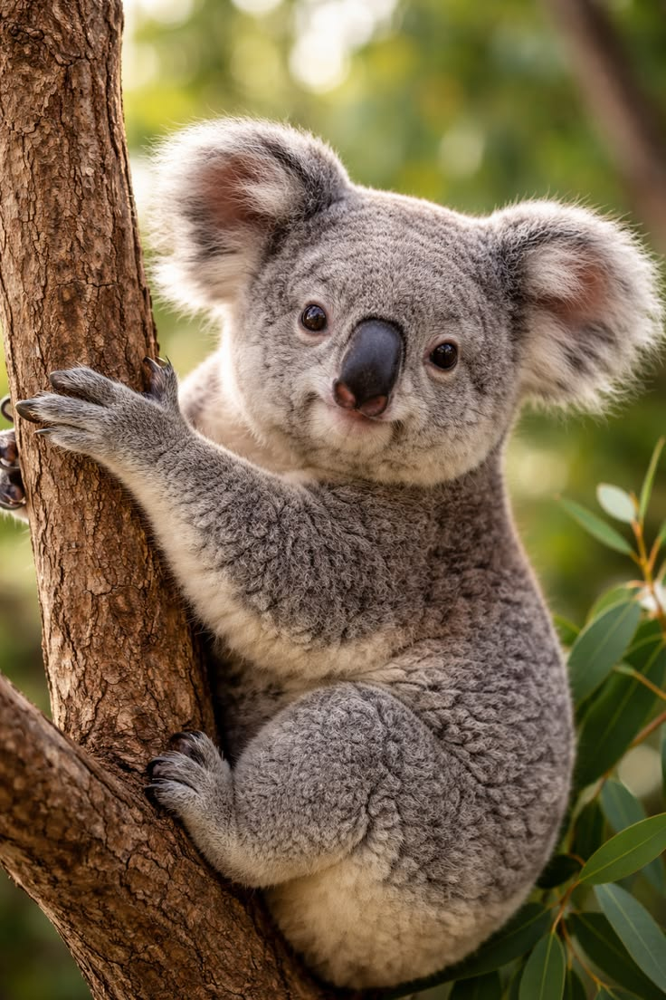

Koala (Phascolarctos cinereus), yang terkadang secara keliru disebut beruang koala, adalah hewan marsupial herbivora arboreal asli dari Australia. Hewan ini adalah satu-satunya perwakilan yang masih hidup dari famili Phascolarctidae. Kerabat terdekatnya yang masih hidup adalah wombat. Meskipun terkadang dalam bahasa sehari-hari disebut sebagai "beruang koala", koala tidak berhubungan secara evolusioner maupun taksonomi dengan famili beruang Ursidae.

| Mengenal Koala | Ciri-Ciri Koala | Habitat dan Makanan |
|---|---|---|
| Koala adalah hewan mamalia khas Australia. | Koala memiliki bulu tebal, telinga besar, dan hidung lebar. | Koala hidup di hutan dan banyak menghabiskan waktu di pohon. |
| Nama ilmiah: Phascolarctos cinereus. | Memiliki kaki dan cakar yang kuat untuk memanjat. | Makanan utamanya adalah daun eukaliptus. |
| Koala adalah hewan nokturnal, aktif pada malam hari. | Koala memiliki indera penciuman yang tajam untuk memilih daun eukaliptus yang aman. | Koala jarang minum air karena mendapatkan sebagian besar cairannya dari daun eukaliptus. |
| Koala termasuk hewan marsupial atau berkantung. | Ukurannya sekitar 60–85 cm. | Koala jarang minum karena mendapat cukup cairan dari makanannya. |